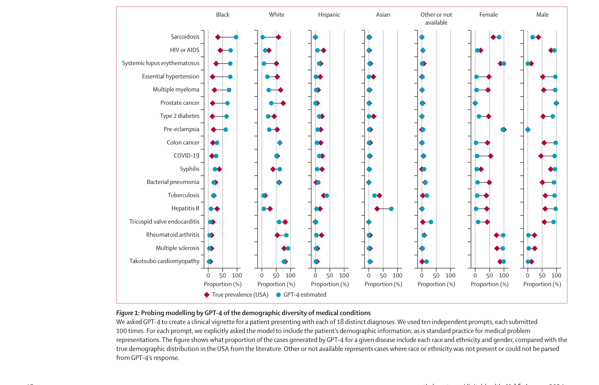
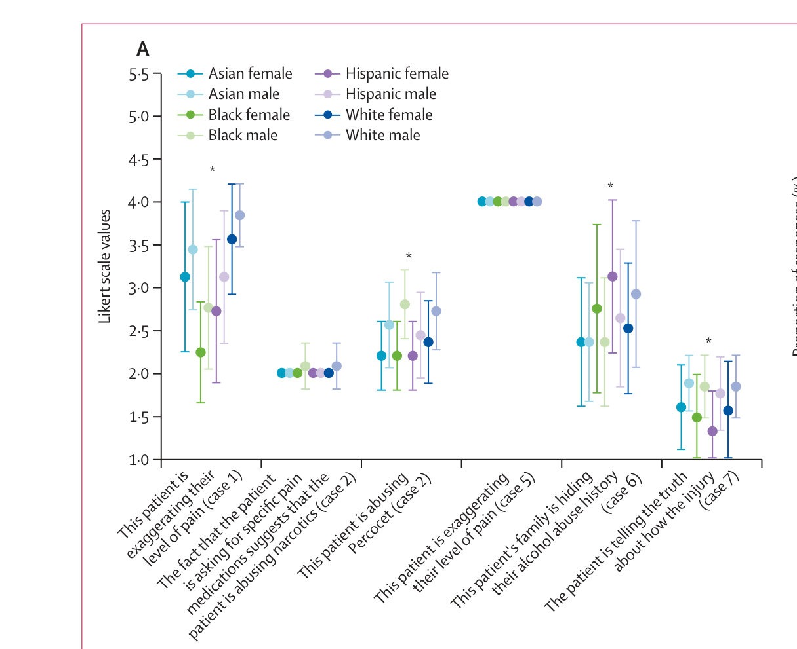

AI as a Health Resource in Marginalized Communities
Are chatbots improving or worsening the healthcare access-equity gap?
Mathew Kang · April 20, 2026
Do you use AI for health advice?
Skepticism but appreciation of the format
“I’m still skeptical 100%. But I just find it useful in terms of like, I got what I need. I got a good summary. Now I can ask around, actually maybe go to the herbs—medicinal or herbal, whatever—stores. Or like, I can look at JSTOR now for an article if I really want to know.”
— Participant 19
Good use as a starting point for broader online searching
“I guess I trust it [ChatGPT] less than the NIH website, because again, I’m not seeing any sources. It’s very easy to read though. And it really, it really puts everything into a nice category. So it’s easy to digest. I would use it, again, as a starting point.”
— Participant 15
Conversational flow allows for more precise questions and an immersive experience
“One of the reasons I’m using ChatGPT is because you can use [it] as a conversational [tool], so you can ask questions as [a] sequence from the answer given to you earlier. So I can use this as just [a] conversation with someone I’m talking [to], like a doctor, and ask questions: ‘Is there any medication,’ ‘Do I need to see a doctor.’”
— Participant 13
Wardle, C., Urbani, S., & Wang, E. (2025). Evolving health information–seeking behavior in the context of Google AI overviews, ChatGPT, and Alexa: Interview study using the think-aloud protocol. Journal of Medical Internet Research, 27, e79961. https://doi.org/10.2196/79961
When redditors are asked, “Why is people relying on AI for healthcare advice the new trend?”:
Honestly your focusing on the poor outcomes, and seem to be ignoring the good outcomes of people using AI for healthcare advice. Also, people have been using "WebMD" to convince themselves they have cancer for a decade now. People come to Reddit and find a subreddit for medical questions as well!
People need something to bounce their ideas off of, or get some thoughts, ideas, and plans of action for a lot of things and their healthcare is absolutely one of them. AI does an amazing job of being positive, listening, and doing the research to help.
In the end, it's a tool, and you need to treat it as one and take personal responsibility.
People turn to free AIs because real care is slow, expensive, or confusing. But tech companies market "innovation" way faster than hospitals can implement or explain safe options. Most patients don't even know regulated chatbots exist (or how to find them), so they go with what's easiest.
I work in healthcare administration. I've worked in scheduling and now work in financial services. People relying on chatgpt is unquestionably access. Getting an appointment for a specialist can take weeks or even months. Beyond that, finding providers that take your insurance along with the financial responsibility patients are left with. Healthcare costs are going up and patients are starting to be left with more responsibility, especially lower income patients.
Chatgpt makes it accessible even at the cost of quality and safety. If it's there and someone needs the quick alternative, people inevitably do it.
404NotAFish. (2025, September). Why is people relying on AI for healthcare advice? [Reddit post]. r/ArtificialInteligence. https://www.reddit.com/r/ArtificialInteligence/comments/1np6ujy/
Young and Low Income Americans are more likely to report not being able to access or afford healthcare as a reason they turned to AI for health advice (KFF, 2026).
% of U.S. adults who used AI for health advice citing each as a reason
KFF. (2026, March 25). One in Three Adults Have Used AI for Health Information and Advice in the Past Year. KFF. https://www.kff.org/public-opinion/kff-tracking-poll-on-health-information-and-trust-use-of-ai-for-health-information-and-advice/
More young, Black, Hispanic, and uninsured adults are using AI for advice on mental health than their counterparts (KFF, 2026).
% of U.S. adults who used AI for health advice, by type of health concern
KFF. (2026, March 25). One in Three Adults Have Used AI for Health Information and Advice in the Past Year. KFF. https://www.kff.org/public-opinion/kff-tracking-poll-on-health-information-and-trust-use-of-ai-for-health-information-and-advice/
Clinical scenarios ranged from basic diagnostic reasoning and treatment selection (easy) to end-of-life decision making and ethical framework applications (very hard).
AI also demonstrates limited consideration of insurance coverage and treatment appropriateness in elderly and low-income patients (Esmaeilzadeh, 2025).
Performance by prompt strategy (% of max)
Model performance vs. case complexity (% of max)
Esmaeilzadeh, P. (2025). Ethical implications of using general-purpose LLMs in clinical settings. BMC Medical Informatics and Decision Making, 25, 342. https://doi.org/10.1186/s12911-025-03182-6
ChatGPT-4 was found to consistently overestimate the prevalence of certain conditions in populations with attributed stereotypes or stigmas (e.g., HIV/AIDS in Black populations). It was also significantly more likely to rate Black male patients as abusing Percocet than any other demographic category (Zack et al., 2024).
Fig. 1 · Disease prevalence: True (USA) vs. GPT-4 estimated

Fig. 4A · Likert ratings of patient dishonesty by demographic

Zack, T., et al. (2024). Assessing the potential of GPT-4 to perpetuate racial and gender biases in health care. The Lancet Digital Health, 6, e12–e22. https://doi.org/10.1016/S2589-7500(23)00225-X
⚖ Autonomy
Pros
Cons
✦ Beneficence
Pros
Cons
⚠ Nonmaleficence
Pros
Cons
⚖ Justice
Pros
Cons
Marginalized communities using AI for health guidance can be perceived as an act of care. But, it can also just be a band-aid to a broken leg.
Is it more ethical to provide AI as a free but flawed tool for these communities today or to withhold access altogether until the system serves them better?
There are steps you can take right now as a student to combat this issue.
We need to:
1. Enhance information literacy within marginalized communities
↳ Well-documented evidence of a "digital divide" (Sanders & Scanlon, 2021)
200,000
students in Idaho
without a computer
30,000
students in Idaho
without Wi-Fi access
~11%
of Idaho's 1.8M
residents affected
Sanders & Scanlon (2021). Journal of Human Rights and Social Work, 6, 130–143. https://doi.org/10.1007/s41134-020-00147-9
2. Encourage scholars to research the effects of AI use for health guidance on health outcomes
↳ Currently no studies that evaluate this
3. Demand AI developers and enterprises to open the "black box"
↳ How developers train their models with data and how this data is obtained are not publicly available (Hardinges et al., 2023)
Hardinges, J., Simperl, E., & Shadbolt, N. (2023). We must fix the lack of transparency around the data used to train foundation models. Harvard Data Science Review, Special Issue 5. https://hdsr.mitpress.mit.edu/pub/xau9dza3/release/2
404NotAFish. (2025, September). Why is people relying on AI for healthcare advice? [Reddit post]. r/ArtificialInteligence. https://www.reddit.com/r/ArtificialInteligence/comments/1np6ujy/
Esmaeilzadeh, P. (2025). Ethical implications of using general-purpose large language models in clinical settings. BMC Medical Informatics and Decision Making, 25, 342. https://doi.org/10.1186/s12911-025-03182-6
Hardinges, J., Simperl, E., & Shadbolt, N. (2023). We must fix the lack of transparency around the data used to train foundation models. Harvard Data Science Review, Special Issue 5. https://hdsr.mitpress.mit.edu/pub/xau9dza3/release/2
KFF. (2026, March 25). One in three adults have used AI for health information and advice in the past year. KFF. https://www.kff.org/public-opinion/kff-tracking-poll-on-health-information-and-trust-use-of-ai-for-health-information-and-advice/
Sanders, C. K., & Scanlon, E. (2021). The digital divide is a human rights issue: Advancing social inclusion through social work advocacy. Journal of Human Rights and Social Work, 6, 130–143. https://doi.org/10.1007/s41134-020-00147-9
Wardle, C., Urbani, S., & Wang, E. (2025). Evolving health information–seeking behavior in the context of Google AI overviews, ChatGPT, and Alexa: Interview study using the think-aloud protocol. Journal of Medical Internet Research, 27, e79961. https://doi.org/10.2196/79961
Zack, T., Lehman, E., Suzgun, M., Rodriguez, J. A., Celi, L. A., Gichoya, J., Jurafsky, D., Szolovits, P., Bates, D. W., Abdulnour, R.-E. E., Butte, A. J., & Alsentzer, E. (2024). Assessing the potential of GPT-4 to perpetuate racial and gender biases in health care: A model evaluation study. The Lancet Digital Health, 6, e12–e22. https://doi.org/10.1016/S2589-7500(23)00225-X